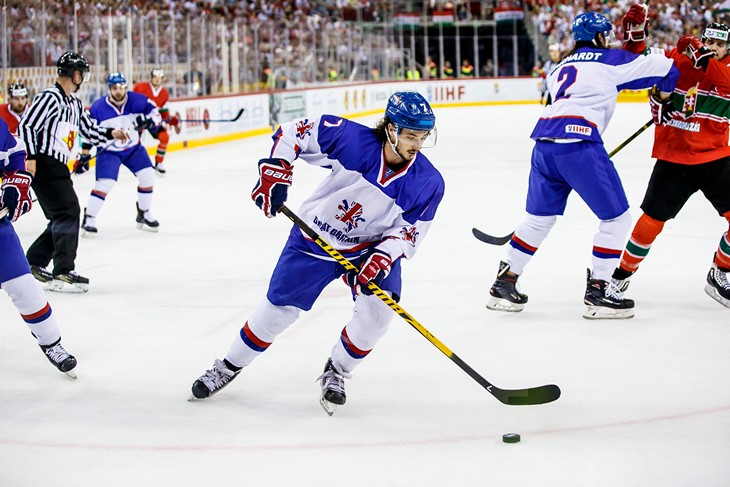
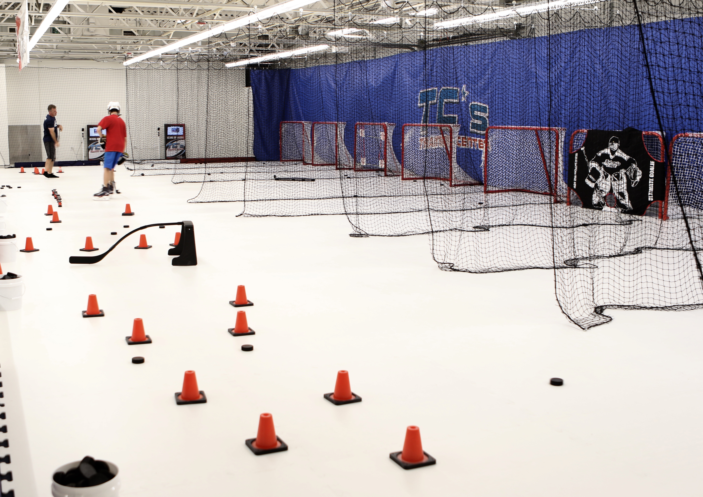

Информация о хоккее

Хоккей — это командный вид спорта, который играется на льду или на специальных искусственных покрытиях. Цель игры состоит в забрасывании шайбы в ворота соперника для набора очков. Хоккей является одним из самых быстрых и динамичных видов спорта и пользуется популярностью во многих странах.
Вот основные аспекты хоккея:
Ледовая площадка:
Игровое поле хоккея называется ледовой площадкой. Оно имеет прямоугольную форму и разметку, включая центральную линию, линии ворот и другие ориентиры.
Команды:
В хоккее играют две команды, каждая из которых состоит из вратаря и игроков полевого состава. Обычно на поле находится шесть игроков от каждой команды, включая одного вратаря.
Шайба:
Шайба — это маленький круглый предмет, сделанный из пластика или резины. Игроки используют клюшки, чтобы управлять шайбой и забрасывать ее в ворота соперника.
Голы:
Цель игры — забрасывание шайбы в ворота соперника. Каждый успешный заброшенный мяч приносит команде одно очко.
Трети и периоды:
Игра в хоккей обычно разбита на трети (периоды) продолжительностью 20 минут (в профессиональном хоккее). В перерывах между периодами команды могут обсудить тактику и восстановить силы.
Смена игроков:
Игроки меняются на поле во время игры, чтобы поддерживать высокую интенсивность. Смена происходит на лету, когда другой игрок выходит на лед через специальные двери на стороне площадки.
Физическая подготовка:
Хоккей является физически интенсивным видом спорта, требующим выносливости, быстроты, ловкости и силы.
Броски и пасы:
Игроки могут выполнять разнообразные броски — от мощных "снайперских" ударов до точных пасов между игроками. Техника бросков и пасов имеет ключевое значение.
Специализация игроков:
В хоккее различают нападающих, защитников и вратарей. Каждая роль требует своих навыков и тактики игры.
Правила:
Хоккей имеет разнообразные правила, касающиеся офсайда, ударов, удач и других аспектов. Правила варьируются в зависимости от лиги и уровня соревнований.
Профессиональные лиги:
Существует множество профессиональных хоккейных лиг в разных странах, включая Национальную хоккейную лигу (NHL) в Северной Америке.
Хоккей — это интенсивный и эмоциональный вид спорта, который привлекает как профессиональных игроков, так и любителей. Он требует хороших физических и технических навыков, а также сильной командной работы.
советы

Стать хоккеистом — это замечательная цель, но это требует усердной работы, терпения и преданности. Вот некоторые шаги, которые могут помочь вам начать свой путь к этой цели:
Изучение игры:
Познакомьтесь с правилами хоккея, основными техниками и стратегиями игры. Чтение книг, просмотр видеоуроков и наблюдение за матчами могут помочь вам понять основы.
Обучение у тренера:
Наймите опытного тренера, который поможет вам развить технические навыки, такие как катание на коньках, броски и пасы, и научит вас стратегии игры.
Катание на коньках:
Хорошее владение коньками — это основа хоккейной игры. Проводите много времени на катке, чтобы улучшить баланс, маневренность и скорость.
Тренировки:
Уделяйте много времени тренировкам. Разрабатывайте навыки бросков, пасов, игры в защите и другие аспекты игры.
Физическая подготовка:
Хоккей требует хорошей физической формы. Работайте над выносливостью, силой и гибкостью, чтобы справляться с интенсивной игрой.
Игра в команде:
Присоединитесь к местной хоккейной команде или лиге. Игра в команде позволит вам развивать командную работу, адаптироваться к различным игровым ситуациям и получить ценный опыт.
Участие в соревнованиях:
Принимайте участие в местных турнирах и лигах, чтобы получить игровой опыт и оценить свой прогресс.
Специализация:
Разберитесь, в какой роли хотите играть: нападающий, защитник или вратарь. Каждая роль требует своих навыков и подхода к игре.
Самосовершенствование:
Анализируйте свои игры и тренировки. Работайте над устранением слабых сторон и постоянно стремитесь к улучшению.
Образ жизни:
Заботьтесь о своем здоровье, питании и сне. Правильный образ жизни поможет вам быть в хорошей физической и психологической форме.
Профессиональные возможности:
Если ваша цель — стать профессиональным хоккеистом, то рассматривайте возможности вступить в юношеские академии или развивающиеся хоккейные программы, которые могут предоставить дополнительное обучение и игровой опыт.
Постоянство и упорство:
Путь к успеху требует времени и усилий. Будьте готовы сталкиваться с трудностями, но не теряйте мотивацию и продолжайте работать над собой.
Старайтесь наслаждаться процессом обучения и игры, и помните, что развитие навыков и достижение целей — это долгосрочный процесс.